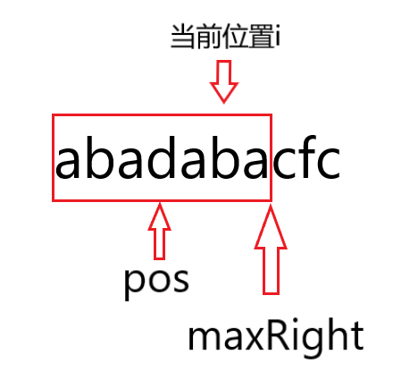
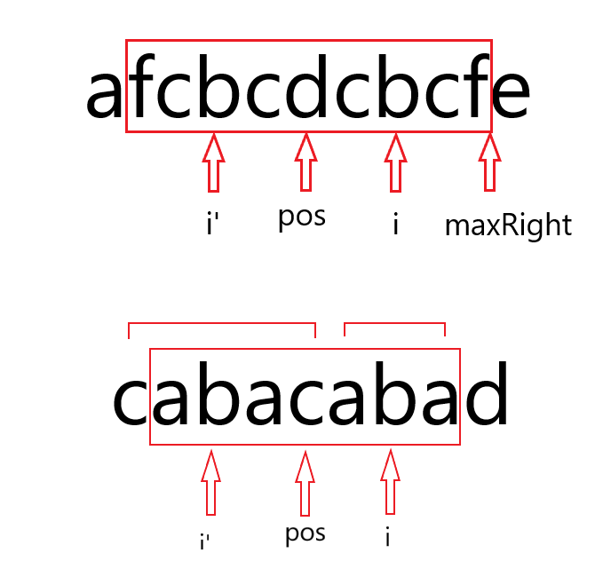
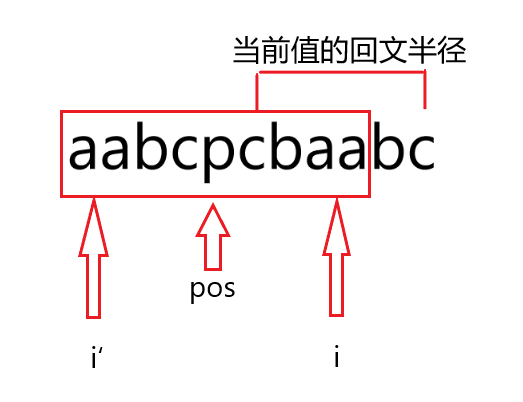

Manacher算法及其应用
简介
Manacher算法俗称马拉车算法。用于解决最长回文子串问题。
回文串指正读和反读都一样的字符串。
例：
Manacher算法可以很快的找到一个字符串最长回文子串，其时间复杂度为O(n)。
参考
思路
- 首先考虑到回文串可以分为两种情况：奇回文和偶回文。
奇回文：abcba 长度为5
欧回文：abba 长度为4
按照传统思路，需要先考虑回文是奇回文还是欧回文，最后再分别进行运算。
但是用Manacher算法，可以先把回文加入特殊字符进行处理，达到奇偶回文一致的效果。
奇回文： #a#b#c#b#a# 长度为11
偶回文： #a#b#b#a# 长度为9
由前后两个例子可以很明显的看出来：处理后的回文/2 即为处理前的回文长度。
另一个问题：
处理时候加入的字符，如果是原字符串中有的，会有影响吗？
因为处理时候加入的字符是对称的，不会影响，所以处理字符可以是任意值。
- 开始之前，需要再明确一个概念，回文半径
1 | 字符串S： abc1234321ab 长度为12 |
- 接下来正式进入Manacher算法。

图中pos为当前最靠右回文半径的中心点，maxRight为最大右边界，i为当前遍历到的位置。
首先要明确，Manacher算法加速的是图中pos之后到maxRight之前的部分，即当前最大回文半径内的字符，不需要再次比较，可以直接得到结果。这里要分两种情况：
- 当前匹配值i的半径在maxRight内时：

对照相对于pos 的对称点 i‘，发现 i’ 点的回文半径在pos的回文半径内部，直接得到i点的回文半径。
需要注意的是第二种情况，p‘范围比pos大，此时应该取i和maxRight之间的距离。
- 当前匹配值i的半径在maxRight外时：

对照对称点i‘发现，i’的半径到达了当前回文半径的边缘。直接使i的半径等于i’，然后再向右暴力扩，得到i的回文半径。同时更新maxRight的值，这时i即为pos。
code
1 | //预处理 |
扩展
题目1：
给定一个字符串str1，只能往str1的后面添加字符变成str2，要求str2 整体都是回文串且最短。
举例： str1 = ABC12321, 返回ABC12321CBA
思路
大体思路不变，只不过是求第一个到达最后的回文串。
1 | public static char[] manacher(String s) { |